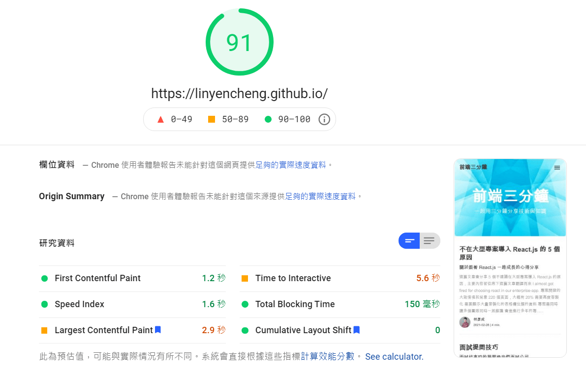
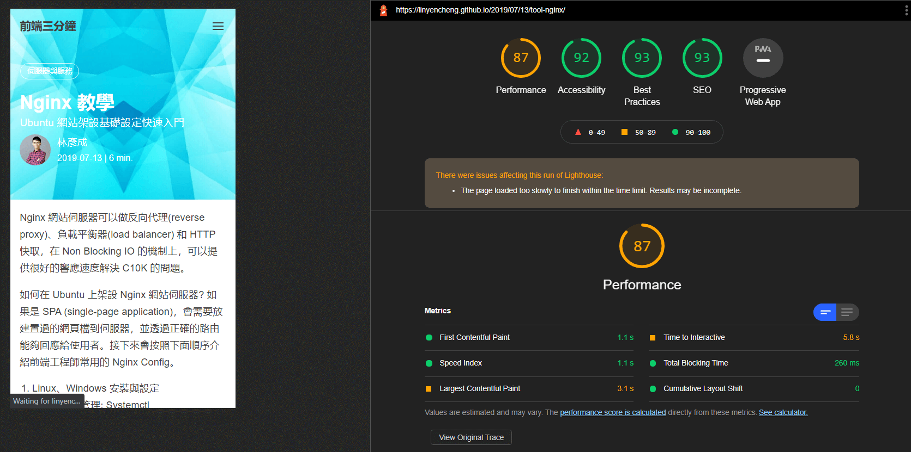

四種加快網站開啟速度的常見方法
這篇文章會簡介加快網站開啟速度的四種常見方法，透過延遲載入、程式拆分、打包檔分析、資源優化幾個項目來作優化，並且用網站速度測試工具來進行檢核是否有效。
網站在載入效能上會遇到哪些問題?
- 靜態資源過多載入過慢
- 腳本複雜執行時間過長
- RWD 的設計造成樣式檔越來越大包
延遲載入 (Lazy Load)
透過程式來 lazyload 腳本，不想用新潮寫法的話透過以下簡單寫法就可以延後載入非必要的腳本，譬如在我部落格中的 diqus 就是透過這樣的方法進行 lazyload 的，我會偵測是否有捲動到某個特殊的 div 如果有才進行載入。
1 | function loadScript(src, callback) { |
圖片的部份 npm 上有個套件叫 lazyload，用的招式其實就是修改了 img 圖片來源的 attribute，並透過觀察的方式把 attribute 換回來進行 lazyload。
<img src="<image-url>" width=400 height=400><img class="lazyload" data-src="<image-url>" width=400 height=400>
1 | // default settings |
程式拆分 (Code Splitting)
JavaScript 在早期伺服器渲染的階段，檔案較小且大多只有擔任簡單的事件互動，可以說幾乎沒有優化的需求，近幾年 Node.js 的快速發展加上 SPA 的概念出現後，才開始慢慢出現比較大且複雜的腳本。
當腳本複雜化後就開始有了 module 的概念，方便在撰寫的時候重複組合使用，在 JavaScript 中的 module 有很多種載入方式，像是早期的 CommonJS 或 AMD-based 的 RequireJS 或是都支援的 UMD，再來就是用 Webpack 搭配 Babel 直接用 ES6 的寫法。
Webpack 這類的工具起初的目標是幫我們把拆分的 module 做好打包，方便我們用 bundle 後的檔案進行發佈，當腳本開始變多時就會有越來越多當下不需要但又會被載入的部分，隨後應運而生的就是 code splitting 的概念。
Code splitting 如何去優化網站的載入效能?
因為腳本執行與樣式渲染都會影響網站的載入，原則上就是透過是當的分類拆分，透過 lazyload 的概念來達到優化的目的。Code splitting 能夠做到的應用場景如下:
- 按照路由切分在特定頁面只載入相關的腳本與樣式檔，譬如在個人資料頁面就不載入商品或是行銷活動頁面相關程式碼。
- 常用的第三方套件被放在某個
common.chunk.js中，這樣瀏覽器就能夠進行快取，這樣即使要看到新版的應用，也不一定要重新下載這個部分。 - CSS-in-JS 的方案讓樣式檔可以跟著元件一起載入，或是盡量使用原子化設計的撰寫方式，並且把相關的樣式都放在
common.css中讓瀏覽器進行快取。
會有 code splitting 另一方面也是 HTTP2 出現之後的影響，針對同一個網域可以平行處理資源，但值得注意的是經網路上的大大測試同時很多小檔也不一定比一個大檔案快，所以其實是要嘗試出一個中間值。
- https://www.digitalocean.com/community/tutorials/http-1-1-vs-http-2-what-s-the-difference
- https://factoryhr.medium.com/http-2-the-difference-between-http-1-1-benefits-and-how-to-use-it-38094fa0e95b
- https://medium.com/@asyncmax/the-right-way-to-bundle-your-assets-for-faster-sites-over-http-2-437c37efe3ff
打包檔分析器 (Bundle Analyzer)
在使用的套件越來越多的情況底下，其實延遲載入、程式拆分的做法改善也有限，有時候其實很難發覺到底是哪個套件對專案影響最大，這時候就可以使用打包檔分析器來找看看兇手是誰，解決的方式也許是看看
- import 的時候使用 partial import 的方式而不是直接全部引入 (
import has from 'lodash/has';
vsimport { has } from 'lodash';)，這個部分跟 code splitting 其實是類似的概念 - 找替代方案，像是 moment.js 就屬於大包的套件，就有 day.js 或是 date-fns 這類相對小包的套件可作替代
範例頁面可以看這裡:
https://cdn.rawgit.com/danvk/source-map-explorer/08b0e130cb9345f9061760bf8a8d9136ea60b457/demo.html
資源優化 (Resource Optimization)
- 透過撰寫 serviceWorker 來實作 PWA 靜態資源快取
1 | self.addEventListener("install", function (event) { |
- 資料面的快取
- API 快取: https://github.com/RasCarlito/axios-cache-adapter
- Redux 快取: https://github.com/rt2zz/redux-persist
- 靜態圖片資源進行無損壓縮
網站速度測試工具
Google 提供了底下兩套免費的工具 PageSpeed Insights 較適合非開發者使用會是用真實環境去測試，Chrome Lighthouse 則比較適合前端工程師本地端測試使用。
PageSpeed Insights

Chrome Lighthouse

喜歡這篇文章，請幫忙拍拍手喔 🤣